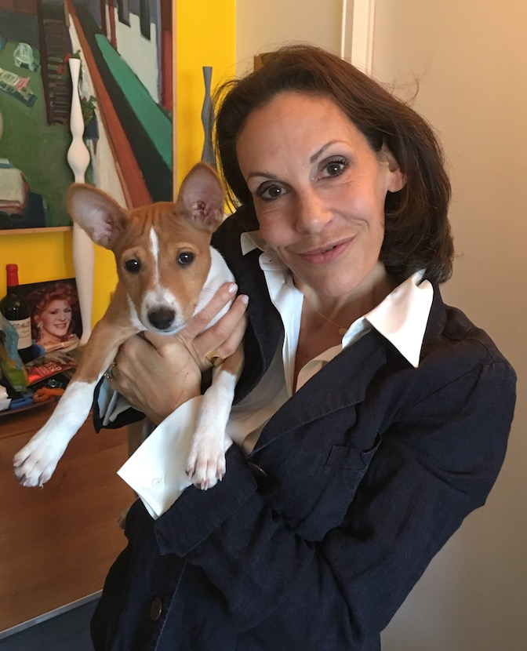

About Me
Hello! My name is Liz Levine, and I'm originally from Detroit, Michigan. I've been living in Manhattan since the 1980's when the city had a very different look and feel than it does today. I've have the priviledge and opportunity to explore many different career paths.
As an undergraduate, I briefly studied computer programming, which I loved and excelled at. I found the process of breaking down complex problems into a series of logical steps facinating and inspiring. At the time however, I could not see a path forward.
Years later, while trading cryptocurrency, I redisovered this passion. While using different trading platforms, I learned how to enable greater functionality with charts and graphs through changing the code in their code editor. I also discovered an interest and apptitude for technical annalysis. It was then that I had my "ah-ha" moment and began my fact finding mission about what it takes to develop software. After much due dilligence, I discovered and was accepted into Columbia University's School of Engineering, full stack web development program.
Outside of my many hours spent coding and brainstorming new apps, my favorite hobby is training and grooming my beloved two-year-old Basenji (pictured here as a 13-week-old puppy) for the show ring! Reiki comes from a long line of AKC Grand Champions and is following his ancestors's paw-steps, competing for his championship title.
(If you're interested in learning more about this unique, exquisite, and ancient African breed, please visit my "still-in-progress" website).
Thank you for visiting and I look forward to meeting soon!